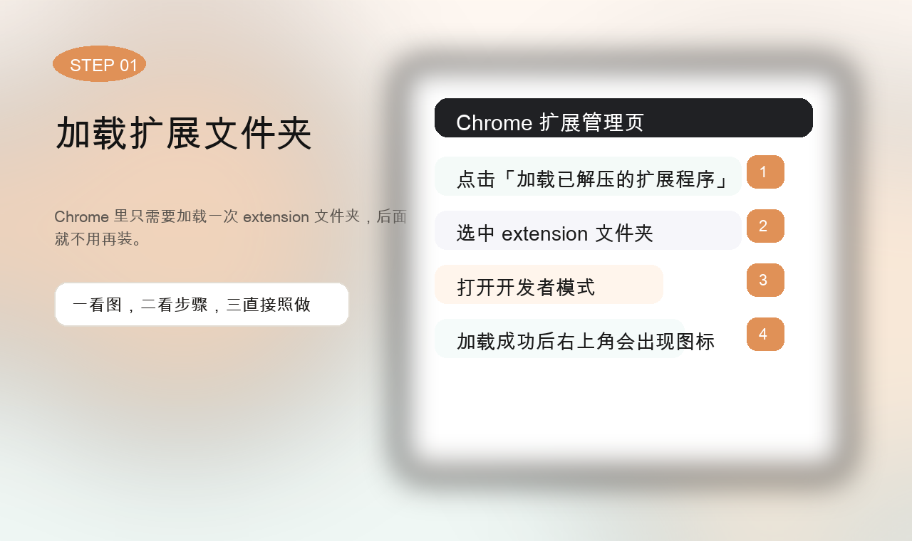
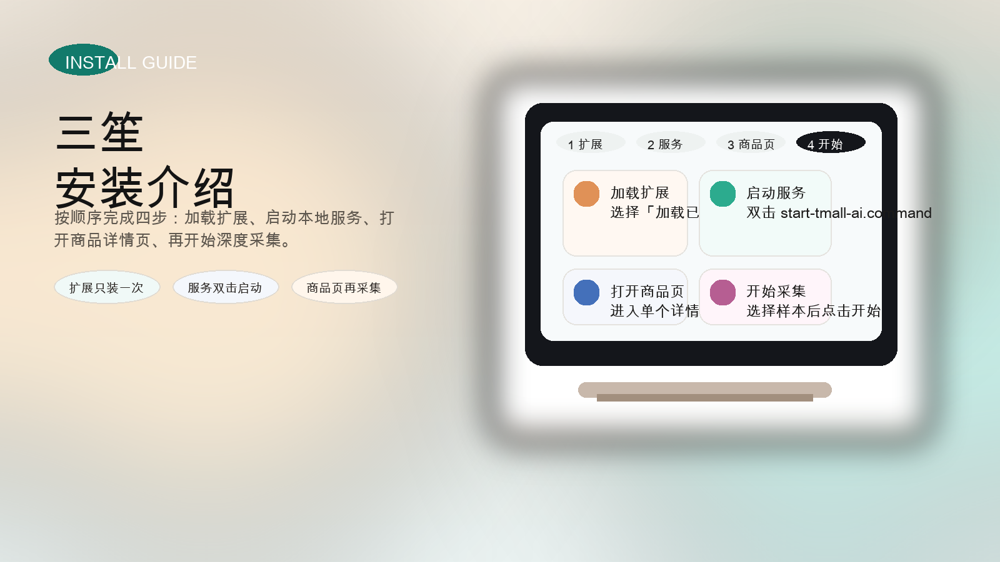
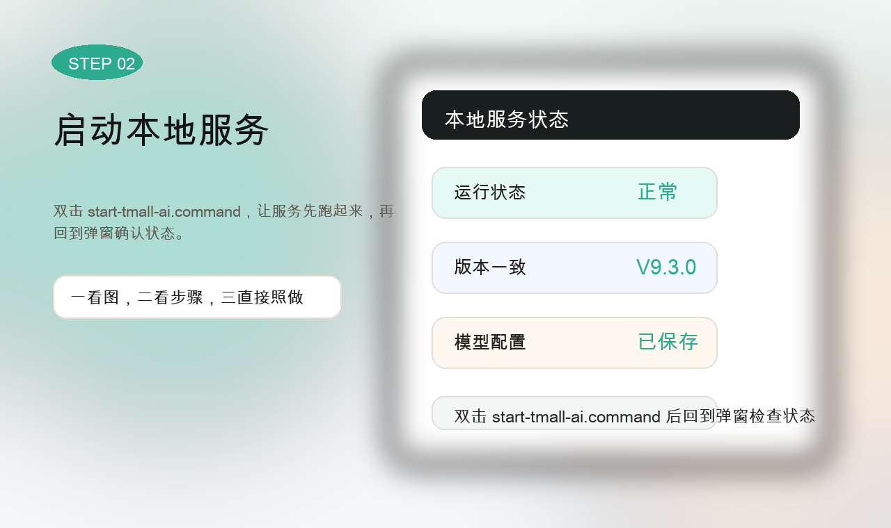
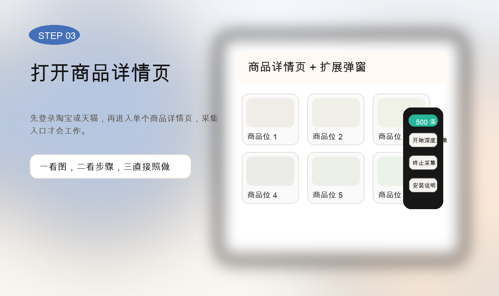
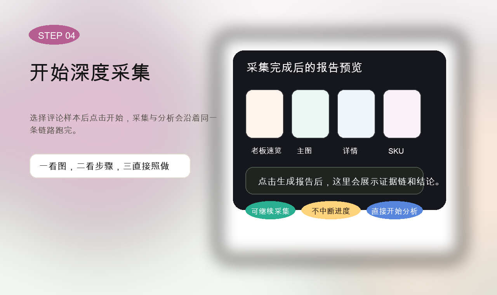

STEP 01 加载扩展文件夹Chrome 里只需要加载一次 extension 文件夹，后面就不用再装。
这是第一次使用的入口。先把扩展装上，再启动本地服务，最后打开商品详情页开始采集。下面用图片把每一步讲清楚。

先看顺序，再看图示
先加载 extension 文件夹，再双击启动本地服务，然后进入单个商品详情页。弹窗里会显示服务状态和采集入口，版本一致时就可以直接开始。

STEP 01 加载扩展文件夹Chrome 里只需要加载一次 extension 文件夹，后面就不用再装。

STEP 02 启动本地服务双击 start-tmall-ai.command，让服务先跑起来，再回到弹窗确认状态。

STEP 03 打开商品详情页先登录淘宝或天猫，再进入单个商品详情页，采集入口才会工作。

STEP 04 开始深度采集选择评论样本后点击开始，采集与分析会沿着同一条链路跑完。
打开扩展管理页，点“加载已解压的扩展程序”，选择当前仓库里的 `extension` 文件夹。
双击 `start-tmall-ai.command`，让后端先运行。弹窗里会显示服务状态、版本和模型配置。
先登录淘宝或天猫，再打开一个具体商品详情页。这个工具不是在列表页跑的。
在弹窗里选 50、100、500、全部或自定义样本，再点击开始，采集和分析会串成一条链。
把关键点讲透
弹窗里先确认“本地服务 ✓”再继续，不然采集不会真正开始。
样本档位和按钮都在弹窗里，点一下就能开始，不需要另外找页面。